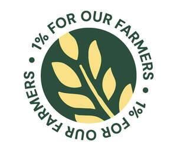

Trade Mark Journal No.2025/029 18 July 2025
UK00004212488 2 June 2025 (36,41,42,43,44)
Mark 1

Mark 2

Mark 3

Mark 4
- Class 36
- Charitable fund raising including charitable collections, management and monitoring of charitable funds; arranging charitable fundraising events; charitable services, namely financial services; charitable fundraising by means of entertainment events; trustee services; provision of insurance care homes, operation of savings accounts, provision of housing accommodation for the elderly; letting agency for sheltered accommodation; debt management services; debt advisory services; debt counselling services; financial grant services; providing monetary grants; provision of information and advice relating to welfare benefits; operation of profit sharing schemes for charitable purposes; collection, management and distribution of charitable donations; provision of information and advice relating to the aforesaid services.
- Class 41
- Education and instruction; training, entertainment and cultural activities; arranging and conducting of conferences, seminars, symposiums and workshops; publication of books and texts; writing articles; publication of periodicals, surveys, reports and self-study courses; education, in relation to money management, health, welfare, housing entitlement, consumer affairs and family matters within the farming community and the law relating thereto; arranging and conducting of entertainment, sports and educational events for charitable purposes; arranging and conducting of entertainment, sports and educational events for charitable fundraising purposes; recreational services for the elderly; provision of information and advice relating to the aforesaid services.
- Class 42
- Advisory, negotiating and representational services of or for the farming community relating to the establishment, assessment and certification of standards within the farming industry; research services relating to farming and the farming community; provision of information over computer networks relating farming and to the farming community; research and development services in the farming community; provision of information and advice relating to the aforesaid services.
- Class 43
- Provision of retirement homes; retirement home services; provision of homes for the injured, disabled ill and elderly; old people's home services; provision of sheltered accommodation; provision of residential homes for the elderly; services relating to residential homes for the elderly; respite care services in the form of adult day care; catering services for retirement homes; charitable services, namely providing temporary accommodation; charitable services, namely providing food and drink catering; provision of information and advice relating to the aforesaid services.
- Class 44
- Provision of nursing care; nursing homes; provision of sanatoriums, rest and convalescent homes; nursing home services; nursing services (medical-); medical advice; hygiene services and advice; provision of advice relating to health and welfare; medical and psychological counselling services; charitable services namely providing medical services; respite care; respite care services; advice relating to the personal welfare of ill, injured, disabled and elderly people; information services relating to farming; provision of information and advice relating to the aforesaid services.
The Royal Agricultural Benevolent Institution
Representative: Mishcon de Reya LLP